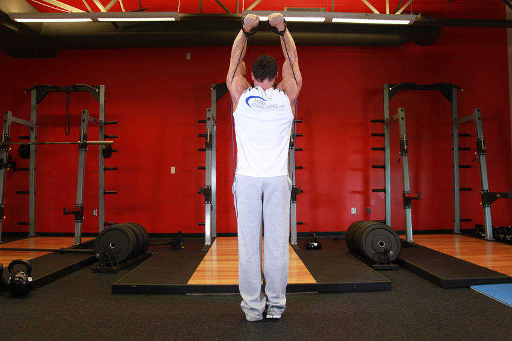

- To begin, stand on an exercise band so that tension begins at arm's length. Grasp the handles and lift them so that the hands are at shoulder height at each side.
- Rotate the wrists so that the palms of your hands are facing forward. Your elbows should be bent, with the upper arms and forearms in line to the torso. This is your starting position.
- As you exhale, lift the handles up until your arms are fully extended overhead.